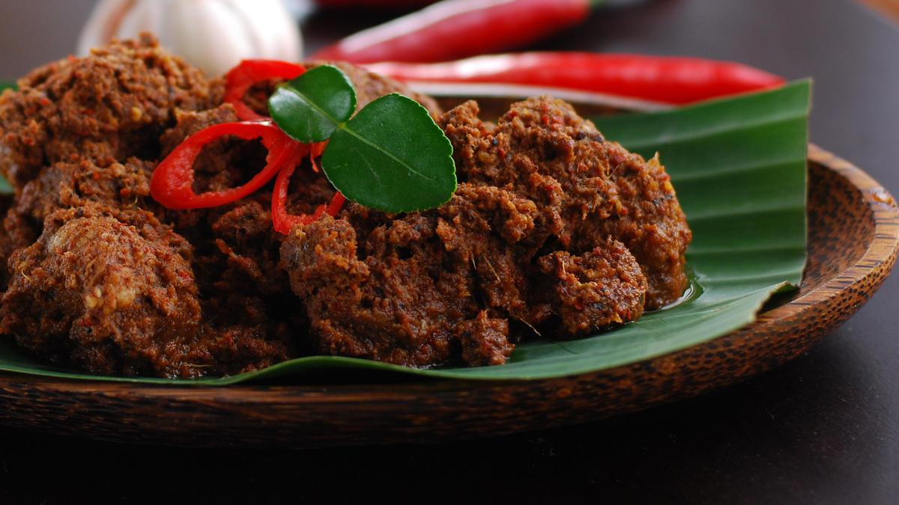
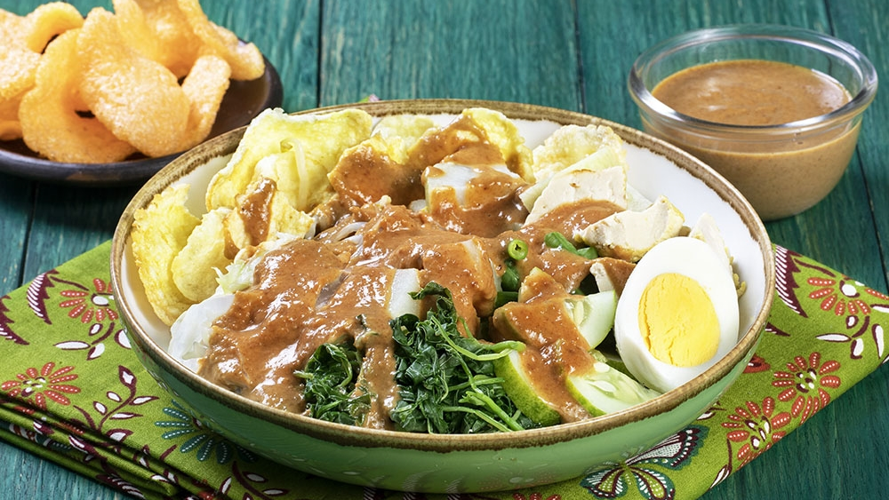

Nasi Goreng
Nasi goreng adalah hidangan nasi yang digoreng dalam minyak kelapa dengan bumbu khas Indonesia.

Rendang
Rendang adalah masakan daging sapi yang dimasak dalam santan dan rempah-rempah hingga empuk. Ini memiliki rasa kaya dan pedas.

Sate
Sate adalah makanan yang terdiri dari potongan daging yang ditusuk dengan tusukan bambu dan dibakar. Biasanya disajikan dengan saus kacang.

Soto
Soto adalah sup tradisional Indonesia yang terbuat dari kaldu daging ayam atau sapi dengan bumbu-bumbu seperti kunyit dan serai. Disajikan dengan nasi.

Gado-gado
Gado-gado adalah salad sayuran dengan saus kacang khas Indonesia. Biasanya berisi tahu, tempe, kentang, dan telur